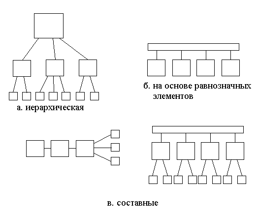
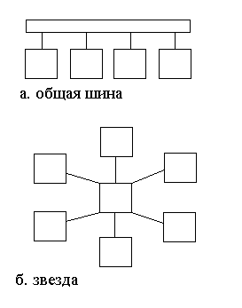
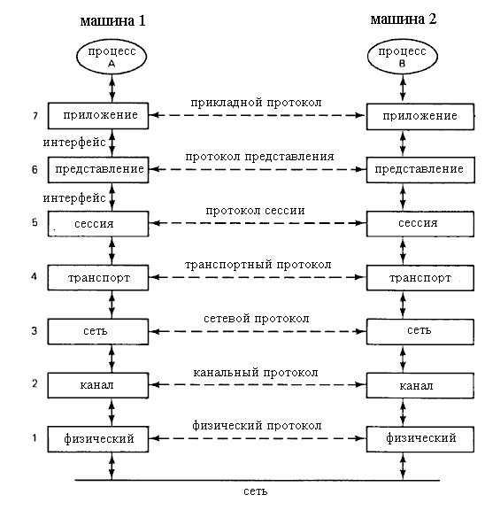
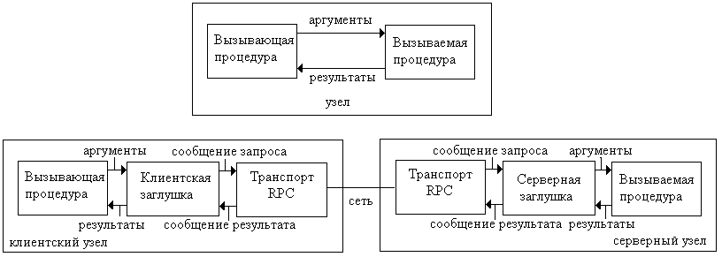
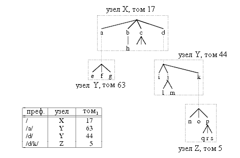

Распределенная ВС - такая ВС, элементы которой пространственно распределены и являются полноценными централизованными ВС. Пользователем она воспринимается как единая, целостная система. Термин "распределенная ВС" - антоним для "централизованная ВС". Практически все рассмотренные выше ВС относятся к централизованным. Только некоторые кластеры можно отнести к распределенным системам. Элементы распределенной ВС назовем узлами. Узлы могут быть простыми однопроцессорными ВС или высокопроизводительными параллельными ВС.
Выделяют следующие характерные свойства распределенных систем [1]:
1) множественность вычислительных устройств;
2) целостность системы;
3) связность системы.
Эти свойства распределенных систем весьма разноплановы. Не все из них реализуются аппаратно. Часть из них реализована в системном программном обеспечении.
Множественность вычислительных устройств - наличие в распределенной системе двух и более узлов, содержащих полноценные централизованные ВС, имеющие процессор, память и интерфейс для взаимодействия с другими элементами распределенной системы. Требование наличия полноценных централизованных ВС введено для того, чтобы не считать распределенными системы, имеющие одну централизованную ВС и сложное периферийное оборудование. Современный лазерный принтер содержит процессор и память, т.е. его можно считать ВС. Однако нельзя назвать распределенной системой одну централизованную ВС с подключенным к ней лазерным принтером. Нельзя считать распределенной и многопроцессорную ВС с архитектурой SMP, так ее процессоры, используют одну и ту же общую память, и их нельзя назвать полноценными ВС. Множественность вычислительных устройств - свойство распределенных систем, которое достигается исключительно аппаратными средствами. Программная эмуляция (имитация) нескольких ВС на одной физической (т.е. реально существующей) централизованной ВС не превращает эту ВС в распределенную, а лишь имитирует или моделирует работу распределенной ВС на ней.
Логическая целостность распределенной системы системы заключается в том, что она воспринимается прикладными программистами и пользователями как единая, централизованная система. Они могут пользоваться вычислительными и информационными ресурсами всей системы, но при этом не чувствовать наличия в ней множества ВС. В частности, для пользователя нет разницы в запуске программы на локальной и на удаленной ВС. Аналогично, доступ к данным, расположенным локально и удаленно производится с точки зрения пользователя одинаково. Логическая целостность существенно проще достигается в распределенной системе с одинаковыми узлами. Если узлы имеют разную архитектуру, то необходимо иметь разные реализации операций, предоставляемых системой пользователю. Число реализаций равно количеству видов узлов, из которых построена распределенная система.
Логическая целостность - свойство, которое реализуется системным программным обеспечением. Когда пользователь запускает программу, он не указывает узел, на котором она будет исполняться. За него это делает операционная система. Наиболее подходящий узел определяется с помощью статистики загрузки узлов, априорных оценок потребления ресурсов программой и наличием свободных ресурсов на узлах. Если программа не сопровождается априорными оценками, то выбирается наименее загруженный узел. Загруженность определяется как отношение времени, когда процессор не простаивает, к общему времени. Если есть априорные оценки на требуемые ресурсы, то они могут сверяться с реально доступными ресурсами на узлах.
Связность распределенной ВС - наличие связей между ее узлами. Связь может осуществляться с помощью каналов передачи данных, сетевых интерфейсов.
Можно выделить следующие основные цели построения распределенных систем [2]:
1) объединение ресурсов существующих ВС;
2) автоматизация процессов, которые распределены по своей природе;
3) организация совместной работы группы пользователей;
4) построение надежных систем;
Распределенную систему можно создавать с целью объединения ресурсов (вычислительных или информационных) существующих ВС. Как MPP системы и кластеры, распределенные системы можно использовать с целью организация быстрых вычислений. Уже имеющиеся ВС можно объединить с помощью программного обеспечения в распределенные системы. Или же можно построить хранилища данных размера, превышающего размер внешней памяти на отдельных централизованных ВС. Другая возможность, возникающая в распределенных системах, - совместное использование дорогостоящего периферийного оборудования.
Другая цель построения распределенной системы - автоматизация производственных процессов, которые распределены по своей природе. Например, на предприятии может быть много удаленных друг от друга мест, где необходимо вводить данные с датчиков, обрабатывать эти данные и управлять оборудованием. Большая часть работы производится автономно. Но иногда частям системы требуется взаимодействовать. Например, руководитель предприятия должен иметь возможность проводить мониторинг работы всех систем в реальном времени. Примеры других таких распределенных систем: 1) сеть супермаркетов с кассовыми терминалами, терминалами на складах и в главном офисе; 2) система, разработанная IBM для резервирования билетов для авиакомпании Pan American, имевшей много пунктов продажи билетов (одна из самых первых распределенных ВС), 3) сеть устройств "умного" дома.
Следующая цель создания распределенной системы - организация совместной работы группы географически удаленных пользователей. Пользователи могут, например, реализовывать совместный проект или играть в многопользовательскую стратегическую игру.
Еще одна цель - создание систем, имеющих высокую живучесть. Дублирование ВС, хранящих и обрабатывающих данные, в удаленных местах позволяет сохранить работоспособность системы при выходе из строя или уничтожении части оборудования. При этом может быть деградация в производительности системы. Например, ряд организаций с офисами на Манхэттэне, имеет резервные ВС (и оптоволоконную сеть передачи данных) в штате Пенсильвания на удалении примерно в 160 км от головных офисов.
Свойство связности распределенных систем реализуется их аппаратным обеспечением: коммуникационным оборудованием, связывающим элементы в единую сеть. Существуют различные варианты построения аппаратного обеспечения, которые описываются схемами распределенных ВС. Схема распределенной ВС - граф, узлы которого являются узлами распределенной ВС, а дуги между ними - соединения для потоков данных и команд между ними. Схемы делятся на:
1) иерархические;
2) реализованные на основе равнозначных узлов;
3) составные.

Рис. 1. Виды схем распределенных ВС.
Иерархическая схема имеет древовидный вид. Узлы в такой схеме имеют разные роли и реализуют различный набор функций. Корень дерева - ведущая система. Распределенные ВС, реализованные на основе равнозначных элементов, делятся на однородные и неоднородные. Узлы в неоднородной схеме имеют различающийся набор функций. Они могут, например, обрабатывать различные виды данных или управлять различным оборудованием . Узлы в однородной схеме - равноправные элементы, реализующие одинаковый набор функций. Они могут соединяться друг с другом с помощью различных видов соединения (топологий):
1) общая шина;
2) звезда;
3) узловая связь.

Рис. 2. Топологии однородных схем.
Соединение с помощью общей шины (см. рис 2., а) обычно реализуется для локально расположенных элементов распределенной ВС. Оно требует наименьшее количество оборудования. Однако, оно имеет ограничения в плане расширяемости. При увеличении числа подключенных к нему узлов, падает максимальная скорость передачи данных, так как все данные передаются по одной и той же шине в режиме разделения времени. Для увеличения скорости передачи может использоваться несколько шин. Различные шины могут передавать, например, разные виды данных. Например, одна шина служит для передачи данных между узлами, а другая -между узлами и терминалами.
ВС со звездообразной топологией (см. рис 2., б) имеют узел-переключатель, выполняющий функцию передачи данных между остальными узлами. Эта топология позволяет достичь хорошей расширяемости. Скорость передачи данных не падает при добавлении новых узлов, так как разные узлы пользуются разными каналами передачи данных. Узким местом является переключатель. Его выход из строя делает неработоспособной всю ВС.
При узловой связи существуют отдельные каналы между всеми узлами. При выходе из строя отдельных каналов, система остается работоспособной. Недостаток - большая сложность оборудования. Есть ограничения в плане расширяемости, так как число каналов возрастает быстрее, чем число узлов.
Коммуникации между узлами реализуются на всех уровнях распределенной системы: аппаратурой, ОС и прикладными программами, работающими в ОС. Чтобы упростить рассмотрение всех уровней коммуникаций и ввести общую и понятную всем нотацию, ANSI и Всемирная Организация Стандартизации ISO предложили эталонную модель взаимодействия открытых систем (OSI ISO)[3]. В OSI ISO рассматривается семь уровней(см. рис. 3), называемых стеком протоколов.

Рис. 3. Уровни, интерфейсы и протоколы OSI ISO
Физический уровень определяет электрические параметры соединения, в частности как передавать бит 0 или 1, возможна ли одновременно передача в обоих направлениях, и механические параметры, например, вид разъемов. Примеры интерфейсов этого уровня - RS-232-C, RS-422, STP, V.35, V.34, I.430, I.431, T1, E1, 10BASE-T, 100BASE-TX, SONET/SDH, DSL, 802.11a/b/g/n.
Канальный уровень позволяет передавать не отдельные биты, а пакеты. Он реализует механизмы исправления ошибок. Обнаружение и исправление неверно переданных данных происходит с помощью добавления к пакету дополнительных данных: контрольной суммы или циклического избыточного кода. Примеры протоколов этого уровня - 802.3 (Ethernet), 802.11a/b/g/n MAC/LLC, 802.1Q (VLAN), ATM, CDP, HDP, FDDI, Fibre Channel, Frame Relay, HDLC, ISL, PPP, Q.921, Token Ring, PPP, SLIP, PPTP, L2TP, MTP-2, LocalTalk, TokenTalk, EtherTalk, AppleTalk, PPP.
Задача сетевого уровня - доставлять пакеты данных произвольной длины адресату в сети, выбирая подходящий маршрут и дробя их при необходимости на пакеты такого размера, какой допускается используемыми протоколами канального уровня. Примеры протоколов этого уровня - IP, ICMP, IPsec, ARP, RIP, OSPF.
На сетевом уровне передаваемые пакеты данных могут теряться. Транспортный уровень предоставляет пользователям надежный механизм передачи данных, гарантирующий их доставку. Примеры протоколов транспортного уровня - TCP, SCTP, SPX.
Сессионный уровень позволяет создавать, поддерживать и завершать соединения между распределенно исполняемыми приложениями. Примеры протоколов - Named Pipes, NetBIOS, SAP, SDP.
На уровне представления определяется смысл полей в передаваемых блоках данных. На нем в большей степени располагаются форматы данных, чем протоколы их передачи. Примеры протоколов и форматов - ASCII, EBCDIC, MIDI, MPEG, MIME, XDR, SSL.
Прикладной уровень предоставляет набор протоколов, которые непосредственно используются прикладными программами. Примеры протоколов - NNTP, HL7, Modbus, SIP, SSI, DHCP, FTP, Gopher, HTTP, NFS, NTP, RTP, SMPP, SMTP, SNMP, Telnet.
Как отмечалось выше, логическая целостность распределенной системы - свойство реализуемое ее программным обеспечением, а именно операционной системой (ОС). Как и традиционные ОС для централизованных систем, распределенные ОС управляют аппаратными ресурсами, процессами (запущенными экземплярами программ) и файловыми системами для доступа к данным на таком уровне абстракции, который стирает различия в использовании конкретных устройств внешней памяти и протоколов доступа к данным. Однако распределенные ОС имеют существенные отличия, делающие их гораздо более трудными в реализации. Они работают на многих централизованных ВС (узлах распределенной ВС) одновременно и обеспечивают иллюзию целостности распределенной системы. Логическая целостность на уровне ОС складывается из следующих свойств:
1) прозрачность расположения ресурса;
2) прозрачность миграции;
3) прозрачность репликации;
4) прозрачность одновременного доступа;
5) прозрачность параллелизма.
Прозрачность расположения ресурса - отсутствие знаний у пользователя о том, где расположен объект данных или где исполняется его процесс. Процессы в распределенных ОС могут запускаться на различных узлах ВС. Требуемые процессам данные располагаются в распределенной файловой системе или распределенной базе данных. Физически данные могут располагаться на разных узлах. Распределенная ОС позволяет найти данные по их идентификатору и переслать их в тот узел, в котором исполняется процесс, нуждающийся в них.
Прозрачность миграции - возможность перемещения объекта данных или процесса между узлами ВС, сохраняя свое имя. Распределенные системы позволяют перемещать исполняемый код для запуска на другом узле (миграция кода). Системы, которые в плане прозрачности миграции обеспечивают только миграцию кода, называются системами со слабой мобильностью[4]. В некоторых ОС есть возможность перелета процессов с одного узла на другой в процессе исполнения (миграция процессов). ОС с миграцией процессов называются системами с сильной мобильностью. Инициатором миграции кода или процессов, в зависимости от реализации, может быть передающая или принимающая сторона. Миграция процессов позволяет подключать и удалять узлы из распределенной системы без прерывания ее нормальной работы. Также, миграция процессов является одним из способов обеспечения динамической балансировки нагрузки на уровне ОС. Если некоторый узел сильно перегружен вычислениями, часть его процессов могут мигрировать на наименее загруженные узлы. В случае распределенных систем с однородными узлами, миграция процесса заключается в выгрузке процесса на диск, передачи его кода, данных и контекста исполнения принимающей стороне. Для случая с неоднородными узлами требуется перекомпиляция кода для принимающего узла или его представление в машинно-независимом виде для некоторой виртуальной машины, например JVM[5]. В любом из этих вариантов эффективность миграции существенно ниже, чем для случая с однородными узлами.
Прозрачность репликации - отсутствие знаний у пользователя о том, сколько существует копий объекта данных. Некоторые ОС реализуют дублирование данных. В таком случае, при выходе из строя одного узла распределенной ВС данные не теряются.
Прозрачность одновременного доступа - возможность одновременного использования одного и того же объекта данных многими пользователями. При этом ОС с помощью блокировок исключает возможность правки данных одним процессом, когда они уже читаются другим, или возможность любого доступа к данным, когда они уже модифицируются некоторым процессом.
Прозрачность параллелизма - возможность одновременного выполнения действий в распределенной системе без необходимости знания этого пользователями. Прозрачность параллелизма означает, что по последовательной программе, составленной пользователем, компилятор способен генерировать параллельный код, исполняемый на нескольких узлах распределенной системы. Хотя известен ряд разработок, проводимых в данном направлении [6], в целом прозрачность параллелизма не обеспечивается современными распределенными ОС.
Как и у традиционных ОС, в распределенных ОС есть механизм взаимодействия между процессами (IPC - Inter-Process Communications). В традиционных ОС IPC реализуется с помощью общих окон в памяти. Усложнение в распределенных ОС заключается в том, что процессы могут быть запущены на разных узлах, у которых нет общей памяти. При этом происходит пересылка данных по коммуникационной сети распределенной ВС. Взаимодействие процессов в распределенных ОС бывает двух основных типов: синхронное и асинхронное. При синхронном взаимодействии процесс, посылающий сообщение другому процессу, блокируется до момента получения этого сообщения тем процессом. При асинхронном взаимодействии процесс может продолжать выполняться сразу после вызова операции пересылки. Асинхронное взаимодействие с одной стороны позволяет создавать более эффективные программы, имеющий более высокий уровень параллелизма, с другой стороны оно усложняет логику программ. При асинхронном взаимодействии процесс должен через некоторое время после инициации передачи данных, проверить, завершилась ли эта передача, были ли при этом ошибки.
Распределенные ОС строятся двумя способами. Первый способ предусматривает установку в узлы обычной ОС с монолитным ядром (например, Linux, FreeBSD) и ее дополнение системными программами, реализующими функциональность распределенной ОС. Пример ОС - Sprite. Второй способ - установка в узлы специализированных распределенных ОС, основанных на микроядрах [7]. Микроядро реализует малую часть того, что традиционно входит в функции ядра ОС - управление виртуальной памятью, процессами, организация взаимодействия между процессами и низкоуровневые операции ввода/вывода. Все остальные функции ОС реализуются в отдельных модулях. Пример ОС - Amoeba. Подход с монолитным ядром имеет некоторый выигрыш в производительности. ОС на базе микроядра дает большую гибкость разработки и высокую надежность.
Sprite [8] - распределенная ОС, разработана в Калифорнийском университете в Беркли в 1987 году на базе ОС BSD 4.3. Для межпроцессного взаимодействия для процессов, исполняемых на разных узлах, используется удаленный вызов процедур (RPC, Remote Procedure Call). RPC - синхронный механизм взаимодействия (см. рис. 4). В случае, когда вызывающая и вызываемая процедуры находятся в одном процессе и на одном узле, возможен непосредственный вызов с передачей аргументов, а затем возврат с получением результата. Если процедуры располагаются на разных узлах, вызывающая процедура обращается к клиентской заглушке. Она упаковывает аргументы в сообщение запроса, которое передается транспортом RPC через сеть. На стороне серверного узла серверная заглушка распаковывает сообщение запроса и вызывает процедуру. Получив от процедуры результат, серверная заглушка упаковывает его в сообщение результата. Это сообщение пересылается транспортом RPC через сеть на клиентский узел. Клиентская заглушка извлекает результат из сообщения и возвращает его вызывающей процедуре. Для вызывающей и вызываемой процедур RPC создает иллюзию локальности вызова.

Рис. 4. Взаимодействие через RPC на одном узле и на разных узлах.
На базе RPC в ОС реализована миграция процессов между узлами и распределенная файловая система. Файловая система имеет тома для хранения файлов на разных узлах, но логически имеется единое для всей распределенной системы директорное дерево. Управление пространством имен реализуется с помощью таблиц префиксов. Таблица префиксов позволяет для имени файла в едином дереве найти узел и том, где хранится соответствующий файл. На рис. 5 показан пример файловой системы, которая физически хранится на узлах X, Y, Z и с помощью таблицы префиксов логически представляется единым деревом.

Рис. 5. Пример дерева файловой системы и соответствующей ему префиксной таблицы.
Миграция процесса или группы процессов производится системным вызовом (процедурой ядра ОС) Proc_Migrate. Процессы в Sprite могут иметь общий сегмент данных. В таком случае они обязаны мигрировать вместе. ОС Sprite поддерживает список слабо загруженных узлов, которые принимают мигрирующие процессы. Единственный способ для пользователя заметить, что с его узла мигрировал процесс, это увидеть уменьшение загруженности в соответствующей системной утилите.
Amoeba[9] - распределенная ОС, базирующаяся на микроядре. Построена в 1990 году А. Таненбаумом. Она работает на базе рабочих станций или одноплатных компьютеров с архитектурой SPARC (Sun4c и Sun4m), Sun 3/50 и Sun 3/60, Intel 80386/80486, Motorola 68030, которые объединены сетью Ethernet.
В распределенной ВС на базе Amoeba есть три типа узлов:
1) пользовательские узлы;
2) вычислительные узлы;
3) специализированные серверы.
Пользовательские узлы служат терминалами для работы пользователей с системой. Они имеют GUI интерфейс на базе X Window. Вычислительные узлы служат для выполнения программ пользователей. Они могут быть созданы на базе группы рабочих станций или на базе многопроцессорной ВС. Специализированные серверы служат для реализации распределенной файловой системы.
Минимум функций ОС расположен в микроядре. Это - поддержка памяти, работа с процессами, организация взаимодействия между процессами, низкоуровневый ввод/вывод. Остальные функции вынесены в отдельные процессы, называемые серверными процессами. Процессы пользователя называются клиентскими процессами. Процессы могут состоять из нескольких нитей исполнения. Для взаимодействия двух нитей процессов, находящихся на разных узлах используется RPC. Реализованы групповые коммуникации, когда один поток может передавать одни и те же данные многим потокам сразу с гарантированной доставкой.
Два базовых понятия в Amoeba - объекты и их дескрипторы (capability). Объект имеет абстрактный тип данных. Для типа определен набор операций, производимых с объектом данного типа. При создании типа создается реализующий его серверный процесс. Обращение к этому процессу производится через RPC. В каждом обращении RPC процессу передается объект для обработки, операция для выполнения и ее параметры. Дескриптор - 128-битное значение, возвращаемое при создании объекта. Он служит для указания объекта и подтверждения права его использования. Подделать дескриптор для доступа к чужому объекту невозможно, он представляет из себя зашифрованный блок данных. В Amoeba не используется виртуальная память. Исполняемый процесс полностью загружается в оперативную память.
С помощью серверных процессов реализованы:
1) файловый сервер;
2) директорный сервер;
3) трансляторы.
Файловый сервер хранит файлы и позволяет получать их по их дескрипторам. Получение дескрипторов по именам осуществляется директорным сервером. Директорный сервер позволяет хранить несколько дескрипторов для одного имени файла с целью дублирования файла в ВС. Такое разделение на два сервера не является типичным. В большинстве ОС преобразование имени в дескриптор и хранение объединены в модуле реализации файловой системы. В системе есть трансляторы для ANSI C, Pascal, Modula 2, FORTRAN, BASIC и языка параллельного программирования Orca.
Примеры других распределенных ОС - событийно-ориентированные ОС V System, Accent и ОС LOCUS. Кроме полнофункциональных распределенных ОС существуют пакеты программ и библиотеки, реализующие некоторые функции распределенных систем. Имеются системы, организующие распределенное хранение данных, например распределенные файловые системы AFS, CODA, IBM GPFS и распределенные системы управления базами данных. Пример такой системы - сервис именования доменов Internet (DNS). Для поддержки распределенных приложений созданы среды CORBA, DCOM, SOAP, JMQ. Система PVM (Parallel Virtual Machine) служит для организации распределенных вычислений с разнородными узлами.
К системам поддержки распределенных вычислений можно отнести и класс GRID систем. GRID системы строятся на базе ВС, подключенных к Internet или к некоторой корпоративной сети. ВС в GRID могут быть весьма неоднородными, принадлежать разным организациям и быть географически разнесенными. Скорость коммуникаций между машинами в GRID ниже, чем между вычислительными узлами кластеров. В некотором смысле GRID систем можно считать географически распределенными гетерогенными кластерами. Элементами GRID системы могут быть не только отдельные ВС, но и целые кластера. Широко распространена система Globus[10].
[1] Г. Лорин. - Распределенные вычислительные системы. - М. - Радио и связь. - 1984
[2] Tanenbaum A. - Introduction to distributed systems.
[3] OSI model. - http://en.wikipedia.org/wiki/OSI_Reference_Model
[4] http://lass.cs.umass.edu/~shenoy/courses/spring04/677/lectures/Lec08.pdf
[5] Lindholm T., Yellin F. - The Java Virtual Machine Specification. Second Edition. - http://java.sun.com/docs/books/jvms/second_edition/html/VMSpecTOC.doc.html
[6] Математическое обеспечение ЭВМ. - Векторизиция программ: теория, методы, реализация. - под ред. Чинина Г.Д. - М. - Мир. - 1991
[7] Таненбаум Э. - Современные операционные системы. - СПб. - Питер. - 2002
[8] Ouster J., Cherenson A., Douglis F., Nelson M., Welch B. - The Sprite Network Operating System. - ftp://ftp.cs.berkeley.edu/ucb/sprite/papers/sprite.ps
[9] Tanenbaum A., Gregory J. - The Amoeba Distributed Operating System. - http://www.cs.vu.nl/pub/amoeba/Intro.pdf